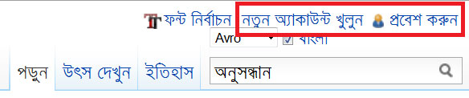

সবসময়ই উইকিপিডিয়া ব্যবহারকারীদের নিবন্ধন করার জন্য উৎসাহিত করা হয়ে থাকে। এখানে খুব সহজেই বিনামূল্যে এবং কোন ঝামেলা ছাড়াই অ্যাকাউন্ট তৈরী করা যায় এবং সেই সাথে নিবন্ধিত ব্যবহারকরীরা এখানে বিশেষ কিছু সুবিধা পেয়ে থাকেন। উইকিপিডিয়াতে অ্যাকাউন্ট তৈরী করা হলে অন্যান্য উইকিপিডিয়ানরা সহজেই ঐ ব্যবহারকারীর সাথে যোগাযোগ করতে পারবেন।
সব থেকে গুরুত্বপূর্ণ বিষয় হল নিবন্ধিত ব্যবহারকারীরাই কেবলমাত্র উইকিপিডিয়াতে নতুন নিবন্ধ তৈরী করার সুযোগ পাবেন। এছাড়া বিশেষ কিছু পাতা রয়েছে যেগুলি সম্পাদনার জন্য নিবন্ধ প্রয়োজন। সেই সাথে নিবন্ধন করার পর সম্পাদনা করার জন্য বিশেষ কিছু টুল ব্যবহার করা যাবে ।
উইকিপিডিয়াতে নতুন অ্যাকাউন্ট খুলতে হলে http://bn.wikipedia.org/wiki/Special:Userlogin এই পাতা থেকে "নতুন একাউন্ট খুলুন" এই লিংকে ক্লিক করতে হবে। অথবা সরাসরি http://bn.wikipedia.org/w/index.php?title=Special:Userlogin&type=signup লিংক থেকেও উইকিপিডিয়াতে নতুন অ্যাকাউন্ট তৈরী করা যাবে। এছাড়া উইকিপিডিয়ার যে কোন পাতার উপরের ডান পাশে Log in / Create account নামের একটি লিংকটি ব্যবহার করে নিবন্ধন করা যাবে। অ্যাকাউন্ট তৈরী করার সময় যে কোন পছন্দের নাম ব্যবহার করা যাবে। তবে একবার অ্যাকাউন্ট তৈরী করা হয়ে গেলে সহজে সেটি আর পরিবর্তন করা যাবে না। নিবন্ধনের সময় একটি ইমেইল ঠিকানা ব্যবহার করতে হবে। প্রয়োজন অনুযায়ী বিভিন্ন ধরনের নোটিফিকেশন পাঠানো এবং সরাসরি যোগাযোগ করার জন্য ব্যবহার করা হয় এই ঠিকানাটি। অ্যাকাউন্ট তৈরী করার পর http://bn.wikipedia.org/wiki/Special:Preferences ঠিকানা থেকে ব্যবহারকারীর তার পছন্দ অনুযায়ী বিভিন্ন অপশন পরিবর্তন করতে পারবেন।